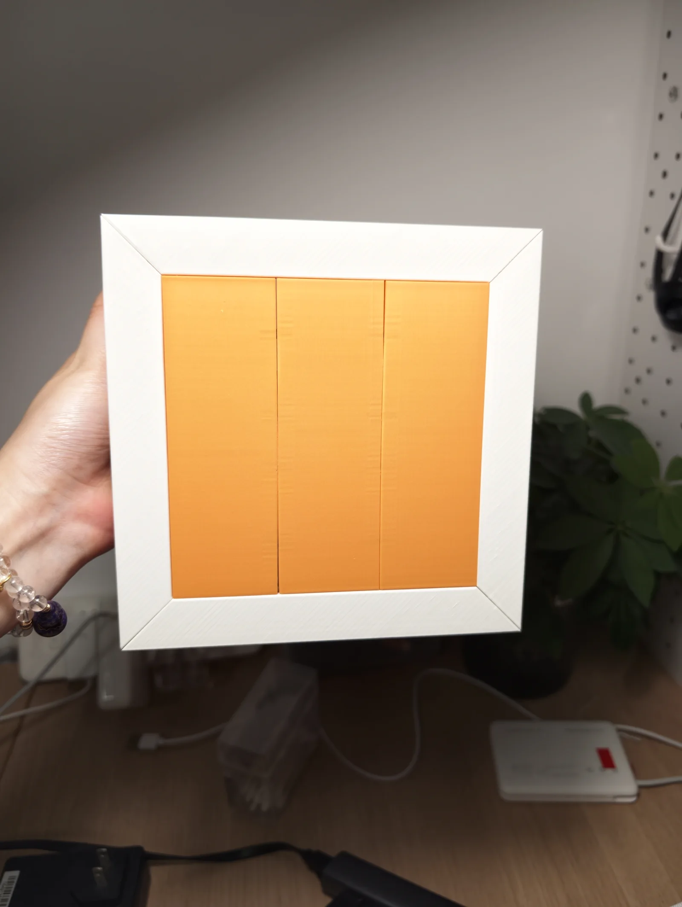
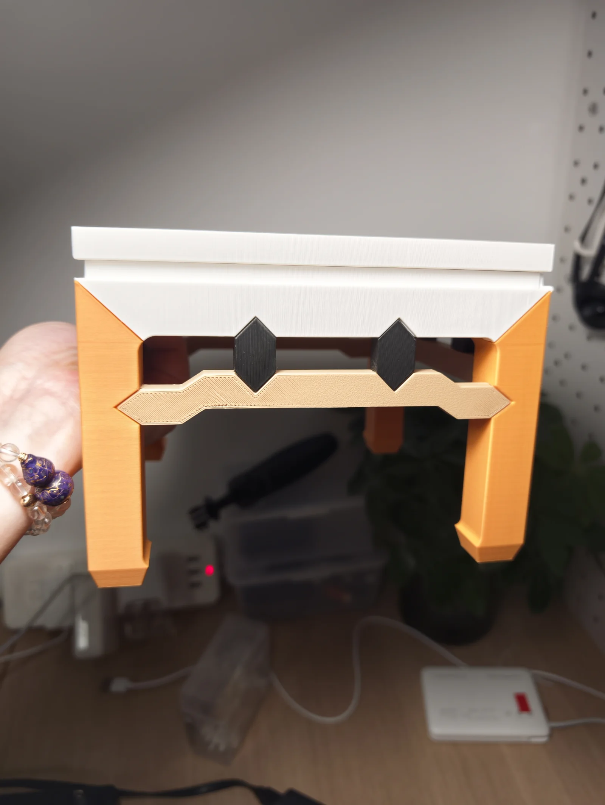
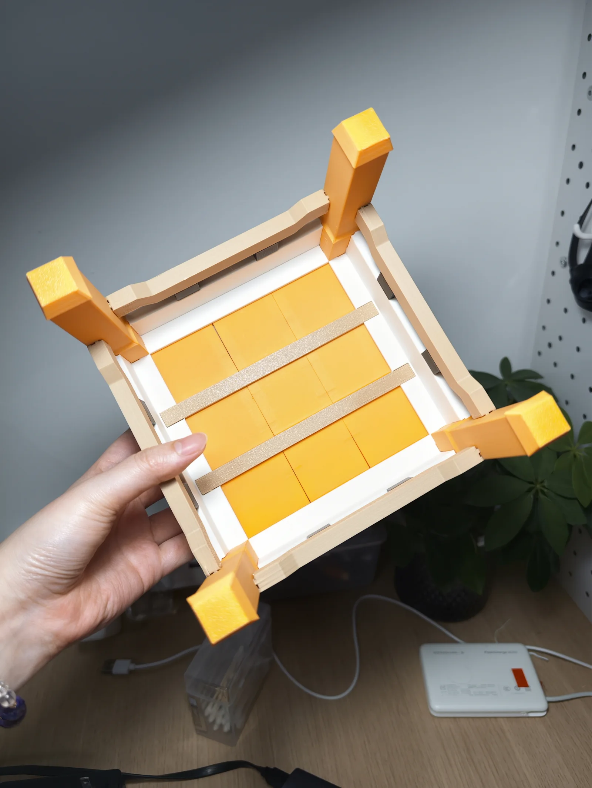
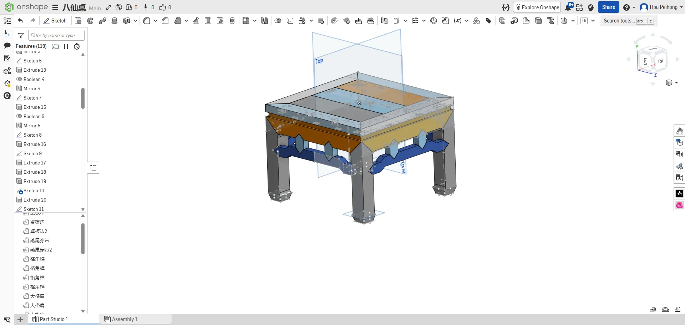
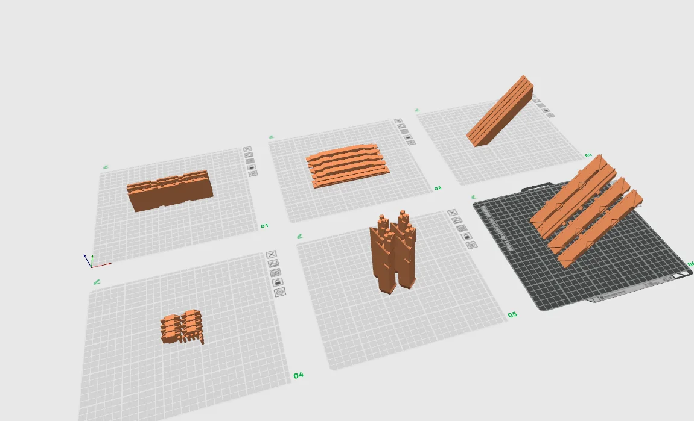

单个榫解决局部运动；一张桌要管理整条误差链。
在直榫测试块里，一对公母件只有一个主要问题：间隙够不够。进入完整桌体以后，四条腿、四边围合、台面分块、下方撑件和锁定件会把局部误差串起来。任何一处只差一点，最后都可能表现成台面合不上、四脚不共面，或最后一个锁定件无法落位。
配合
每个接口能否插入、贴肩、拆出。它仍受 clearance、层纹、象脚和打印方向影响。
闭环
四边围合后，尺寸误差不再各自独立；最后一边是前面所有误差的结算处。
顺序
有些零件一旦锁住，就会挡住下一件的进入路径。完整作品必须把装配顺序也当成设计参数。
一张成品照只能证明“像桌子”；四个方向才开始说明它怎样成立。
下面的判断严格分成“照片可见”和“仍待拆装确认”。照片能看见构件关系，却不能替代剖面、尺寸和逐步装配记录。



照片中的橙、白、木色和深色零件让不同构件系统容易辨认。这是当前照片的可见效果；是否把颜色正式定义为“腿 / 台面 / 围板 / 锁定件”的固定编码，要等零件清单确认后再写入规范。
完整作品的数字链路，比“导出一个 STL”长得多。

Features (119)、Part Studio 1 与独立的 Assembly 1。2026-09-08 的 API 审计另以不可变 microversion 为准，不把截图计数和 API 特征计数混为一谈。
- 01
在 CAD 里先做总装
先回答构件之间怎样定位，尤其是围合后的最后一个自由度如何被消除。
- 02
按制造条件拆成零件
零件拆分要同时考虑成型方向、支撑、配合面和打印机成型空间，而不是只看能否塞进热床。
- 03
按零件类型分成六盘
截图显示长条构件、腿、面板和小件分别排版。这样便于改变单类零件的方向，也降低整盘失败的损失。
- 04
重新合并成一个系统
实物装配会暴露 CAD 里看不到的累积误差、表面摩擦和进入路径冲突。成功合拢只是第一条结果，不是最后一条。
/w/ 工作区会继续变化，本页因此改用不可变 /m/f9e8c…c4b 快照做审计基线。它还不是命名的 /v/ 发布版本；Assembly 1 当前含 0 个实例，装配关系必须从 Part Studio 接口重新建立或补录。| 源 CAD 审计 | 结果 | 本轮意义 |
|---|---|---|
| 不可变快照 | f9e8c517a1e9b12a6a5c4c4b | 现有实物的设计审计基线 |
| Part Studio 实体 | 30 个：桌板 3、燕尾穿带 2、格角榫 4、大格肩 4、腿足 4、矮老 8、虚肩 4、销子 1 | 形成第一版可核查 BOM |
| 命名参数 | table_width 120 mm、table_thickness 6.5 mm、slot_width825 8.25 mm、hole 4 mm、halfleg 35 mm、clearance 0.2 mm | 记录设计值，不升级为实测或推荐值 |
| Assembly 1 | 0 个实例 | 不能从 mate / 装配树验证顺序与接口 |
先写“候选顺序”，再用拆装照片把它证实。
仅凭完工照片，可以提出下面这条装配假设，但不能把它伪装成已经记录过的教程。下一轮最有价值的工作不是再拍一张成品，而是按顺序拆一次、装一次。
| 候选阶段 | 从照片推测的动作 | 下一轮要确认 |
|---|---|---|
| 1 · 建立角点 | 腿与上部围合构件先形成四角基准。 | 角部接口形式；哪一面是定位面；是否需要按对角顺序装。 |
| 2 · 闭合四边 | 围板或框件把四角连成闭环。 | 最后一边如何进入；闭环是否需要弹性变形或临时松配。 |
| 3 · 加入撑件 | 条状构件与深色穿入件限制侧向变形或零件退出。 | 深色件是销、键还是楔；插入方向；是否承担预紧。 |
| 4 · 安放台面 | 分块台面进入白色周边框，底部跨向件参与保持位置。 | 台面是滑入、压入还是自由落位；热胀冷缩与打印收缩如何处理。 |
以上均为根据现有照片作出的编辑推断，不是 CAD 尺寸或作者操作记录。
“打出来了”是重要证据，但它只回答了一部分问题。
- 作者确认 Onshape Part Studio 1 是现有实物对应的源 CAD；已记录不可变 microversion。
- 该快照含 30 个实体和 6 个命名参数，能够建立第一版实体 BOM 与设计参数快照。
- Assembly 1 当前为空；装配关系不能从 mate 或装配树直接读取。
- 2026-09-05 的 CAD 截图记录了 119 个特征，以及 Part Studio / Assembly 两个工作层级。
- 模型被拆成多类零件，并在切片器中分到六个打印板。
- 完整桌体已经打印并成功装配；四张实物照覆盖整体、顶面、侧面和底面。
- 分色让读者可以追踪腿、框、台面、撑件和穿入件之间的关系。
- 不能声称它复原了传统八仙桌的尺度、比例或具体榫卯做法。
- 不能给出 clearance 推荐值：CAD 中的
0.2 mm是设计变量，没有对应实测与适用条件。 - 不能声称他人可复现：虽有不可变源快照，但还没有命名发布版本、导出包、逐盘打印参数和装配日志。
- 不能声称可承重或耐久：照片不是载荷、摇摆、循环拆装或破坏测试。
| 证据层 | 当前材料 | 状态 | 升级条件 |
|---|---|---|---|
| 设计现场 | Onshape source microversion + 30 实体 / 6 参数审计 | 源 CAD 基线已定位 | 补非空总装、接口 ID、命名 /v/ 发布版本与导出包 |
| 制造现场 | 多打印板切片总览 | 有过程图，记录不完整 | 逐盘导出、方向、支撑、耗时、材料与失败记录 |
| 物理装配 | 四张完整装配照片 | 原型 01 已装成 | 加入尺寸、手感、装配顺序和问题清单 |
| 结构性能 | 无 | 未测试 | 先定义用途，再设计摇摆 / 静载 / 循环测试 |
| 外部复现 | 无 | 未测试 | 冻结资产包后由陌生用户独立打印与装配 |
下一轮不急着改造型，先把这件原型变成可复现记录。
建立发布版本
源 microversion 已固定；下一步从该基线建立 baxian-table v0.1 命名版本，并补齐非空总装、接口 ID 与总装状态。
列零件与打印板
给每类零件编号，登记数量、颜色/材料、方向、支撑、打印时长和所属板号。
记录拆装顺序
每一步只移动一类零件，拍进入方向、卡点和最终落位；同时记录需要多大手力。
测关键闭环
至少记录四腿间距、对角线、台面框内口、台面分块总宽，以及最关键公母配合的 X/Y 尺寸。
定义用途后再承载
这是展示模型、杯垫尺寸样件，还是小型置物架？用途不同，静载、侧推和循环次数都不同。
再做资产包
从冻结版本导出 STEP / STL / GLB，加入 manifest；完整打印日志之后才讨论 PRINT_VERIFIED。